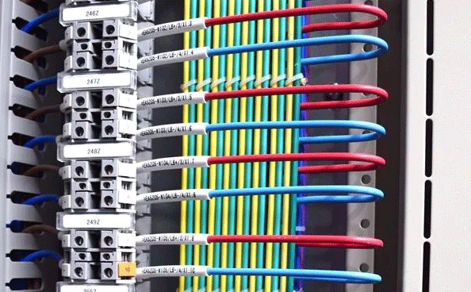
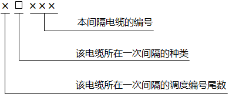
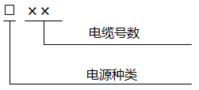

为了便于二次回路的施工与日常维护，根据“四统一”的原则，必须对电缆和电缆所用芯进行编号，编号应该做到使用者能根据编号了解回路用途，能正确接线。
二次编号应根据等电位的原则进行，就是电气回路中遇于一点的导线都用同一个数码表示，当回路经过接点或者开关等隔离后，因为隔离点两端已不是等电位，所以应给予不同的编号，下面将具体的解释些常用电缆和电缆所用芯编号。

电缆的编号

本间隔电缆的编号：通常从101开始编号，以先间隔各个电气设备至端子箱电缆，再端子箱至主控室电缆，先电流回路，后控制回路，再信号回路，最后其他回路（如电气联锁回路，电源回路）的顺序，逐条编号，同一间隔电缆编号不允许重复。
该电缆所在一次间隔的种类：采用英文大写字母表示，220kV出线间隔E，母联EM，旁路EP，110kV出线间隔Y，母联YM，旁路YP，分段YF，35kV出线间隔U，分段UF，10kV出线间隔S，分段SF，电容器C，主变及主变各侧开关B，220kVPT：EYH，110kVPT：YYH，35kVPT：UYH，10kVPT：SYH。
该电缆所在一次间隔的调度编号尾数：如白沙变电站的豆沙线调度编号261，这里就编1，1#主变编1，1母PT编1，依此类推，如果该变电站只有一路旁路，或者一个母联或者分段开关，不需要编号。
各个安控装置如备自投，故障解列，低周减载等的电缆不单独编号，统一将电缆归于装置所控制的间隔依照上面的原则编号。
电源电缆编号

电缆号数：电源电缆联系全站同一一次电压等级的所有间隔，所以应该单独统一编号，一般从01开始依顺序编号
电源种类：交流电源编JL，直流电源编ZL。
由上面可知，所有相同间隔的相同功能电缆除了首位数有区别，其他数字应该是一样的。